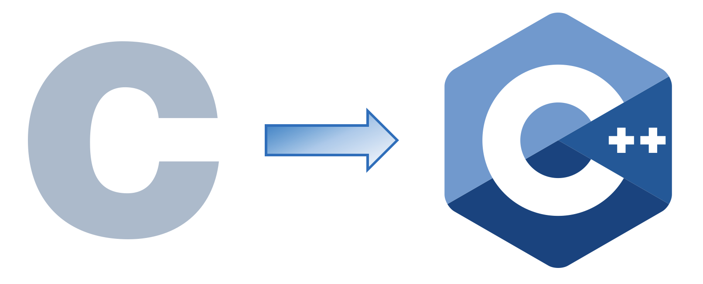

Les différences de syntaxe entre C et C++

Les programmes en C sont presque intégralement compatibles avec le langage C++, et il est ainsi possible de combiner des programmes en C et en C++ dans un même projet, ou d’utiliser la plupart des bibliothèques écrites en C.
Cependant, pour les projets à vocation professionnelle, l’usage d’une syntaxe héritée du C est découragée, afin de tirer parti des avantages d’abstraction et de sûreté du typage (type safety) offerts par le C++.
Les principales différences de syntaxe sont listées ci-dessous. Je ne traite pas ici des nouvelles fonctionnalités exclusives au C++ (librairie standard, templates, programmation orientée-objet, …).
Général
Noms de fichiers
Les fichiers source ont l’extension .c et les fichiers d’en-tête (header) .h.
Les fichiers source ont en général l’extension .cpp (mais parfois .cxx, .cc, …) et les fichiers d’en-tête l’extension .hpp (ou .h, .hxx, …).
En-têtes de fichiers
Les noms d’en-tête de la librairie standard en C, de type <name.h>, sont remplacés par <cname> en C++.
Exemples :
// C
#include <stdio.h>
#include <stdlib.h>
#include <math.h>
// C++
#include <cstdio>
#include <cstdlib>
#include <cmath> Les headers hérités du C <name.h> peuvent ne pas compiler en C++, et tout leur contenu est dans l’espace de nom (namespace) global, ce qui peut causer des incompatibilités de noms.
Leur version C++ <cname> contient strictement les mêmes variables, fonctions, et types, adaptés au C++ et placés dans l’espace de noms std.
Les fichiers d’en-tête exclusifs au C++ n’ont pas de préfixe c :
#include <iostream>
#include <vector>
#include <cstring> // Issu du C, équivalent à <string.h> : contient strlen, strcpy, memset, memcpy
#include <string> // Exclusif C++ : contient std::stringPointeur nul
La macro NULL qui désigne le pointeur nul est simplement un #define NULL 0 dans <stdlib.h>.
En C++, on préfère utiliser le mot-clé nullptr, dont le type est vérifié à la compilation (il est de type pointeur, et ne peut pas être converti implicitement en 0).
Définition de constante
Les constantes connues à la compilation sont en général définies par une instruction de préprocesseur (#define).
Taille d’un tableau :
int n = 5;
int t[n]; // Interdit : la valeur de n n'est pas connue à coup sûr à la compilation, même avec le mot-clé const
#define N 10
int t[N]; // Correct : la macro N est remplacée par 10 avant la compilation
for (int i = 0; i < N; i++)
t[i] = i;Constantes :
typedef struct {
float r, g, b;
} Color;
#define RED ((Color) { 255, 0, 0 })
// ...
Color c = RED;L’inconvénient est que cette macro n’est qu’une substitution textuelle. RED n’est pas une variable, elle n’a pas d’adresse, son type n’est pas vérifié, et l’on encourt des erreurs de syntaxe si l’on omet les parenthèses.
En C++, on utilisera plutôt le mot-clé constexpr.
struct Color {
float r, g, b;
};
constexpr Color RED { 255, 0, 0 };Une variable constexpr doit être connue à la compilation, ou construite via une fonction constexpr. Il s’agit d’un sujet extrêmement vaste, que je ne développe pas ici. On retiendra simplement que c’est un moyen propre de définir des variables constantes en indiquant au compilateur qu’il peut utiliser leur valeur comme si elle était écrite en dur.
constexpr unsigned int size = 10;
int t[size]; // AutoriséEntrées / Sorties
Les opérations d’entrée-sortie sont réalisées par le biais de l’en-tête <stdio.h> et ses fonctions printf, scanf ou de manière plus sécurisée fgets.
Exemple :
#include <stdio.h>
#include <stdlib.h>
// Format:
// %d int, %u unsigned int, %ld long int, %lu unsigned long int
// %f float, %ld double, %c char, %s chaîne de caractères (char*)
#define BUFFER_SIZE 100
int main() {
printf("Saisir 3 entiers : ");
int a, b, c;
int count = scanf("%d %d %d", &a, &b, &c);
if (count < 3) {
printf("Erreur de saisie des entiers\n");
return EXIT_FAILURE;
}
printf("Valeurs saisies : a = %d, b = %d, c = %d\n", a, b, c);
printf("Saisir votre nom : ");
char buffer[BUFFER_SIZE]; // On réserve un buffer pour accueillir la chaîne
// On lit dans l'entrée standard (stdin), au plus BUFFER_SIZE - 1 caractères (suivi d'un '\0')
char * name = fgets(buffer, BUFFER_SIZE, stdin);
if (name == NULL) {
printf("Erreur de saisie nom\n");
return EXIT_FAILURE;
}
printf("Bonjour %s\n", name);
return EXIT_SUCCESS;
}Les opérations d’entrée-sorties sont réalisées avec les opérateurs >> et << et les entrées et sorties standards std::cin et std::cout inclues dans l’en-tête <iostream>.
La syntaxe de l’affichage est la suivante :
std::cout << "your string" << std::endl;L’ajout de std::endl permet de sauter une ligne après l’affichage de la chaîne.
L’avantage de << est que les types sont détectées automatiquement à la compilation. Il n’y a donc pas de risque d’erreur de formattage (%d au lieu de %f par exemple).
int a = 3;
double b = 2.5;
std::string s = "abc";
std::cout << a << " " << b << " " << s << std::endl;
// Affiche : 3 2.5 abcPour la lecture, c’est l’opérateur >> qui est utilisé. Le type des données à lire est également déterminé à la compilation. L’entrée (par exemple l’entrée standard std::cin) est lue jusqu’au premier espace.
int a;
std::cin >> a;Exemple complet :
#include <iostream>
int main() {
std::cout << "Saisir 3 entiers : ";
int a, b, c;
std::cin >> a >> b >> c;
/* Pour gérer l'erreur :
if (not (std::cin >> a >> b >> c)) {
std::cout << "Erreur de saisie" << std::endl;
return EXIT_FAILURE;
}
*/
std::cout << "Saisir votre nom : ";
std::string name;
std::cin >> name;
std::cout << "Bonjour " << name << std::endl;
return EXIT_SUCCESS;
}L’entrée standard std::cin est de type std::istream, et la sortie standard std::cout de type std::ostream. Ce sont des streams (flux), respectivement d’entrée et de sortie.
Les signature des opérateurs d’entrée/sortie sont les suivantes (ici pour lire et afficher un int) :
std::istream &std::istream::operator>>(int &__n);
std::__1::ostream &std::__1::ostream::operator<<(int __n);Ainsi, >> s’applique à un entier pris par référence : plus besoin de donner l’adresse de la variable comme en C, on peut passer la variable directement.
Les deux opérateurs renvoient une référence vers le stream d’entrée, ce qui permet à la fois de chaîner les lectures/écritures (std::cout << "Bonjour " << name << std::endl;) et de vérifier s’il y a eu une erreur, par une conversion implicite en bool :
int a;
if (not (std::cin >> a)) {
// Gérer l'erreur
}
/// La lecture a eu lieu comme prévu.A noter que la lecture a lieu jusqu’au prochain espace ou saut de ligne. Pour lire une chaîne contenant des espaces, privilégiez std::getline.
std::cout << "Entrez votre nom : " << std::endl;
std::string name;
std::cin >> name;
// Pour "Jean Dupont", on obtient name = "Jean".
std::getline(std::cin, name);
// name = "Jean Dupont"struct
Le mot-clé struct doit être répété à chaque mention d’un type struct, ce qui est très fastidieux. On utilise donc des alias (typedef) pour immédiatement renommer notre structure :
// Par défaut :
struct A {
int x;
};
// ...
struct A a;
a.x = 0;
// Avec renommage :
typedef struct {
int x;
} A;
// Fonction qui affiche le contenu d'un objet
void print_A(const A* pa) {
printf("A{%d}", pa->x);
}
// ...
A a;
a.x = 0;
print_A(&a);On peut initialiser un objet struct avec une liste d’initialisation. Depuis C99, il est possible de nommer les membres au moment de l’initialisation.
typedef struct {
int a;
float b;
} S;
// ...
S s = { 5, 2.5f };
// ou, parfois plus clair :
S s = { .a = 5, .b = 2.5f };Une struct est identique à une classe : elle peut donc contenir des membres (variables), mais également des méthodes (fonctions), contrairement au C. Dans une struct tous les membres et les méthodes sont publics par défaut.
Pas besoin de typedef ici, le mot-clé struct n’a pas à être répété avant le nom de la structure :
struct A {
int x;
// Exemple : méthode qui affiche le contenu de l'objet
void print() const {
std::cout << "A{" << x << "}";
}
};
// ...
A a;
a.x = 1;
a.print();On peut initialiser une struct en C++ de plusieurs manières.
struct S {
int a;
float b;
// Constructeur : optionnel
S(int a, float b)
: a(a), b(b) {}
};
// ...
// Plusieurs syntaxes possibles :
// Initialisation directe
S s { 5, 2.5f }; // Initialisation par liste
S s { .a = 5, .b = 2.5f }; // Depuis C++20 : "designated initializer"
S s = { 5, 2.5f };
S s = { .a = 5, .b = 2.5f }; // Depuis C++20
S s(5, 2.5f);Ne pas oublier le point-virgule après l’accolade fermante lors de la définition d’un type struct (en C et en C++).
struct A {
int x;
}; // ; Obligatoireenum
De même, les enum en C++ n’ont plus besoin de leur mot-clé enum :
/* C */
enum Color {
Red, Green, Blue
};
enum Color c = Red;
// Alternative :
typedef enum Color {
Red, Green, Blue
} Color;
Color c = Green;
/**************/
/* C++ */
enum Color {
Red, Green, Blue
};
Color c = Blue;Depuis C++11, on leur préfère les enum class, qui sont typées statiquement et n’effectuent pas de conversions implicites. Elles obligent cependant à préciser le type explicitement (ex : Color::Blue) ce qui les rend verbeuses. On peut alléger cela avec l’instruction using enum.
Exemple :
enum Color { Red, Green, Blue };
int a = Green + Blue; // Autorisé (mais mauvaise pratique) : a = 3
// Meilleure alternative :
enum class Color { Red, Green, Blue };
// ...
Color c = Color::Red;
// ou :
using enum Color; // Permet d'éviter d'écrire "Color::" à chaque valeur
// ...
Color c = Blue;
int a = Green + Blue; // Interdit -> erreur de compilationConversions / cast
La notation courante pour une conversion de type explicite (cast) d’un type A vers un type B est la suivante :
A a;
B b = (B) a;
// On crée une copie de a
// que l'on convertit en valeur de type B
// et que l'on stocke dans la variable bExemple :
int a = 5;
float x = a; // Cast implicite int -> float : x == 5.0f
a = 2.5f; // Cast implicite float -> int : a = 2 (/!\ perte possible d'information)
unsigned int n = (unsigned int) (-1); // Cast explicite : n = 4294967295
int b = (unsigned char) 260;
// 260 est convertit en 260 % 256 = 4
// b = 4Cette notation est plus dangereuse lorsque l’on souhaite manipuler la mémoire directement :
#include <stdio.h>
int main() {
int a = 5;
char *p = (void*) &a; // cast explicite obligatoire
for (int i = 0; i < sizeof(int); i++)
printf("%d ", p[i]);
printf("\n");
// Affiche : 5 0 0 0
p[1] = 1;
printf("a = %d\n", a);
// a = 261
return 0;
}On utilise plutôt l’opérateur static_cast afin d’expliciter les conversions le plus possible.
double x = 2.5;
int n = static_cast<int>(x);
// n = 2
float y = static_cast<float>(n);
// y = 2.0fLorsque l’on souhaite convertir les types de pointeurs, on utilise reinterpret_cast, mais c’est une opération qui peut provoquer des comportements non définis (ou des crashs) :
int main() {
int a = 5;
char *p = reinterpret_cast<char*>(&a); // reinterpret_cast pour changer le type de pointeur
// -> à nos risques et périls
for (int i = 0; i < sizeof(int); i++)
std::cout << static_cast<int>(p[i]) << " ";
std::cout << std::endl;
}Une manipulation courante pour interpréter les bits d’une variable a de type A selon un autre type B est la syntaxe :
A a;
// ...
B b = * (B*) &a;On demande au compilateur de considérer l’adresse de a (de type A*) comme l’adresse d’une variable type B, que l’on déréférence ensuite. C’est une procédure potentiellement risquée, qui peut produire des comportements non définis (les fameux undefined behaviors, UB, omniprésents dans la documentation officielle).
Exemple :
struct X {
char c[4];
};
int main() {
X x { 0, 0, 1, 0 };
for (int i = 0; i < 4; i++)
std::cout << static_cast<int>(x.c[i]) << " ";
std::cout << std::endl;
// C
int a = * (int*) &x;
// C++
int b = * reinterpret_cast<int*>(&x);
std::cout << "a = " << a << ", b = " << b << std::endl;
// a = 65536, b = 65536
return 0;
}Depuis C++20, une alternative plus propre existe : std::bit_cast, dans le header <bit>.
int c = std::bit_cast<int>(x);
// c = 65536Allocation mémoire
Les allocations dynamiques sont réalisées avec la fonction malloc, de l’en-tête <stdlib.h>, et la mémoire est libérée avec la fonction free.
typedef double T; // Exemple
// ...
int n = 10;
// Allocation d'une plage mémoire pouvant recevoir n éléments de type T
T * buffer = malloc(n * sizeof(T));
for (int i = 0; i < n; i++)
buffer[i] = (T) i;
// ...
// Libération de la mémoire (à ne pas oublier !!)
free(buffer);La fonction malloc ne connaît pas le type des éléments qui seront stockées dans la plage allouée (car le C ne dispose pas de polymorphisme statique), elle doit donc prendre en entrée la taille de la plage en octets : n * sizeof(T).
La fonction free n’a besoin que du pointeur renvoyé par malloc, mais étrangement pas de la taille allouée initialement. Cette information est en effet stockée quelque-part au moment de l’allocation, parfois sous la forme d’un en-tête avant le début de la plage. On ne peut malheureusement pas utiliser cette information à l’exécution, car cette gestion de la mémoire dépend du compilateur.
Après avoir libéré la mémoire allouée, il convient de donner au pointeur (ici buffer) la valeur NULL, afin de ne pas être tenté d’y accéder de nouveau. Le pointeur est en effet toujours utilisable, et le déréférencer peut provoquer un crash.
On peut également utiliser la fonction calloc pour allouer un tableau et le remplir immédiatement de 0.
// Prototype
void * calloc( size_t elementCount, size_t elementSize );
// Allocation d'un tableau de 10 int
int * array = calloc(10, sizeof(int));On peut allouer dynamiquement un objet d’un type T quelconque avec l’opérateur new. On libère la mémoire avec l’opérateur delete.
T * x = new T( /* args */ ); // Appelle le constructeur approprié de T, renvoie un pointeur vers l'objet alloué sur le tas
delete x; // Libère la mémoire allouée par l'opérateur newComme pour free, après avoir détruit l’objet alloué, il convient de donner au pointeur x la valeur nullptr, afin de ne pas être tenté d’y accéder de nouveau.
int * p = new int;
*p = 4;
// ...
delete p;
p = nullptr;
// ...
class A {
int a, b;
A(int a, int b)
: a(a), b(b) {
std::cout << "A(int, int)" << std::endl;
}
~A() {
std::cout << "~A()" << std::endl;
}
};
A * x = new A(2, 3); // Affiche : A(int, int)
x.a = 4;
// ...
delete x; // Affiche: ~A()
x = nullptr;On peut également allouer dynamiquement un tableau de taille n objets de type T avec l’opérateur new[], et le détruire avec l’opérateur delete[].
Exemple :
int n = 10;
T* array = new T[n];
for (int i = 0; i < n; i++)
array[i].f();
// ...
delete[] array;new T[n] alloue sur le tas une plage de n * sizeof(T) octets, et appelle n fois le constructeur par défaut (T()) de la classe T pour remplir les n emplacements.
Le destructeur delete[] appelle le destructeur (~T()) de la classe T sur chacun des n éléments, et libère la mémoire allouée par new[].
#include <iostream>
struct A {
int x = 0;
// Constructeur par défaut
A() { std::cout << "A()" << std::endl; }
// Constructeur avec un argument int
A(int x) : x(x) { std::cout << "A(int)" << std::endl; }
// Destructeur
~A() { std::cout << "~A()" << std::endl; }
};
int main() {
int size = 3;
A* array = new A[size];
array[0] = A(5);
for (int i = 0; i < size; i++)
std::cout << array[i].x << " ";
std::cout << std::endl;
delete[] array;
return 0;
}
/* Affiche :
A()
A()
A()
A(int)
~A()
5 0 0
~A()
~A()
~A()
*/On observe ici les 3 appels au constructeur par défaut à la création du tableau, et les 3 appels au destructeur à la destruction du tableau. (Les appels A(int) et ~A() viennent de l’objet temporaire A(5), qui est créé, copié dans array[0] et supprimé.)
Pointeurs
L’usage des pointeurs est une grande source de vulnérabilités :
- Il n’y a aucune garantie qu’un pointeur contient l’adresse d’une variable valide. Un pointeur peut être nul (il contient
NULL=0x0) ou pointer vers une adresse invalide (ou libérée), et ne doit pas être déréférencé (sous peine de crash du programme). - Si une plage allouée avec
mallocn’est référencée que par un seul pointeur, et que ce pointeur est perdu, il n’est plus possible de libérer la plage : on a alors une fuite mémoire. - On peut également oublier de libérer manuellement la mémoire, surtout lorsque beaucoup d’allocations ont lieu.
Le C++ introduit diverses méthodes pour y remédier.
Références
Une référence est équivalente à un pointeur toujours déréférencé. Sa syntaxe est plus légère que les pointeurs traditionnels (pas de *, & et ->), et ils ont l’avantage de toujours pointer vers une variable valide.
int a = 5; // Déclaration d'une nouvelle variable
int& ra = a; // ra est une référence vers a
std::cout << "ra = " << ra << ", a = " << a << std::endl;
// Affiche : ra = 5, a = 5
ra = 0;
std::cout << "ra = " << ra << ", a = " << a << std::endl;
// Affiche : ra = 0, a = 0Pour le passage d’argument à une fonction, on passe généralement les variables par référence lorsque elles sont trop volumineuses (objet de taille supérieure à sizeof(void*) $ = 8$ en général) ou lorsqu’on souhaite les modifier.
// Trie a et b, de sorte à obtenir a <= b
// a et b sont passés par référence
void sort(int& a, int& b) {
if (a > b) {
int c = a;
a = b;
b = c;
}
}
// ...
int x = 8, y = 2;
sort(x, y); // x et y sont modifiés par la fonction sort
std::cout << "x = " << x << ", y = " << y << std::endl;
// Affiche : x = 2, y = 8Exemple :
struct Person {
char name[1000];
int age;
};
// sizeof(A) >= 1004
/* Calcul de la somme des ages des personnes dans un tableau people de taille size */
void f_slow(Person p, int& count) {
count += p.age;
}
void f_fast(const Person& p, int& count) {
count += p.age;
}
// ...
int count = 0;
for (int i = 0; i < nbPeople; i++) {
f_slow(people[i], count);
// Lent : copie le contenu de people[i] dans la variable locale p (>= 1004 octets)
// à chaque itération
f_fast(people[i], count);
// Rapide : copie l'adresse de people[i] (8 octets) dans la variable p (de type référence à Person)
// et lit directement dans la variable people[i]
// Equivalent à un passage de pointeur
}On remarque qu’il n’y a pas de différence de syntaxe entre les appels à f_slow et f_fast. Cela peut-être plus agréable que de devoir écrire &people[i] et p->age, mais aussi source de piège. On ne sait pas si on copie ou si l’on passe par référence sans lire le prototype de la fonction.
Les références ont l’avantage de ne jamais être nulles : il n’y a pas d’équivalent des pointeurs nuls pour les références. Ainsi, pas besoin de vérifier s’il y a bien une variable au bout de l’adresse.
// C
void f(A* pa) {
if (pa == NULL)
return;
pa->x += 1;
}
// C++
void f(A& a) {
a.x += 1;
}Destructeurs
Lorsque l’on souhaite allouer de la mémoire sans risquer d’oublier d’appeler l’opérateur de libération (delete), il est conseillé confier cette tâche à un destructeur qui est appelé automatiquement lorsqu’un objet a terminé sa durée de vie (lorsqu’il sort du scope).
On crée pour cela une classe qui encapsule notre structure, et qui s’occupe d’allouer et de désallouer la mémoire automatiquement. On appelle ce genre de classe handle en anglais.
Exemple :
// Tableau d'entier
class Array {
int* data = nullptr; // Valeurs par défaut
int size = 0;
Array(int n) { // Constructeur
size = n;
data = new int[size];
}
~Array() { // Destructeur
delete[] data;
data = nullptr;
size = 0;
}
};
void f() {
Array arr(20); // Appelle le constructeur
for (int i = 0; i < arr.size; i++) {
// ...
}
// La mémoire est libérée automatiquement par le destructeur de Array.
}En pratique, on utilisera un conteneur de la librairie standard, comme vector, qui a de nombreuses fonctionnalités et une gestion automatique de la mémoire.
#include <vector>
void f() {
std::vector<int> arr(20);
for (int i = 0; i < arr.size(); i++) {
// ...
}
}Pointeurs intelligents (smart pointers)
Lorsque l’on souhaite allouer un seul objet sur le tas, il est préférable de stocker l’adresse renvoyée dans un pointeur intelligent (smart pointer), qui s’occupera de libérer la ressource lorsque l’objet aura terminé sa durée de vie.
Depuis C++11, les deux principaux types de pointeurs intelligents en C++ sont les unique_ptr et les shared_ptr.
Un shared_ptr est un objet qui contient un pointeur vers une ressource. La gestion de la mémoire s’opère par comptage de références : à chaque fois qu’un shared_ptr est copié, on incrémente le nombre d’objets pointant vers la ressource, et on décrémente ce compteur à chaque fois que l’un de ces objets sort du scope. Lorsque le compteur tombe à zéro, la ressource est détruite et la mémoire est libérée.
#include <iostream>
#include <memory> // Header contenant shared_ptr
class A {
public:
int x = 0;
A() { std::cout << "A()" << std::endl; } // Constructeur par défaut
A(const A& a) { // Constructeur par copie
x = a.x;
std::cout << "A(const A&)" << std::endl;
}
~A() { std::cout << "~A()" << std::endl; } // Destructeur
};
void f() {
std::shared_ptr<A> pt = std::make_shared<A>();
// Alloue un objet de type A et appelle
// le constructeur approprié (ici A())
std::cout << "count: " << pt.use_count() << std::endl;
pt->x = 5; // pt se comporte comme un pointeur
{
std::shared_ptr<A> pt2 = pt;
// Copie de pt : il y a maintenant 2 shared_ptr
// pointant vers la ressource
std::cout << "count: " << pt.use_count() << std::endl;
// ...
A a = *pt2;
// pt2 sort du scope : il y a 1 référence à la ressource
}
std::cout << "count: " << pt.use_count() << std::endl;
// ...
// pt sort du scope : la ressource est libérée
}
int main() {
f();
return 0;
}
/* Affiche :
A() <-- make_shared
count: 1
count: 2
A(const A&) <-- Construction de a
~A() <-- Destruction de a
count: 1
~A() <-- Destructeur de shared_ptr libère la ressource
*/Un unique_ptr fonctionne de la même manière, mais n’autorise pas de copie. Un unique_ptr est le propriétaire (owner) de la ressource vers laquelle il pointe. Il peut simplement transférer la propriété à un autre unique_ptr, qui prend alors seul la responsabilité de gérer la mémoire de la ressource.
{
std::unique_ptr<A> pt = std::make_unique<A>();
std::cout << "pt = " << pt << std::endl;
// std::unique_ptr<A> pt2 = pt; // Interdit : l'opérateur de copie du unique_ptr a été supprimé
std::unique_ptr<A> pt2 = std::move(pt); // Autorisé : pt transfère la gestion de la ressource à pt2
std::cout << "pt = " << pt << std::endl;
std::cout << "pt2 = " << pt2 << std::endl;
// La ressource est libérée automatiquement par pt2
}
/* Affiche :
A()
pt = 0x6449bd0c4990
pt = 0 <-- Après le transfert, pt contient nullptr
pt2 = 0x6449bd0c4990
~A()
*/Cet exemple fait intervenir la notion de move semantics introduite par C++11, qui est technique et que je ne développe pas ici. L’appel à std::move(pt) indique que le constructeur à appeler pour pt2 est le constructeur par move. La classe unique_ptr est grossièrement écrite de cette manière :
template<typename T> // T sera le type de l'objet pointé
class unique_ptr {
T* ptr;
// Constructeur : initialise le pointeur
unique_ptr(T* ptr)
: ptr(ptr) {}
// Constructeurs par move :
// u est une rvalue-reference (&&, passée par std::move),
// il transfère la propriété de la ressource et ne s'en occupe plus
unique_ptr(unique_ptr&& u) {
ptr = u.ptr;
u.ptr = nullptr;
}
// Opérateur de construction par move, identique
unique_ptr& operator=(unique_ptr&& u) {
ptr = u.ptr;
u.ptr = nullptr;
}
// Construction par copie interdite
// Constructeurs par copie supprimés
unique_ptr(const unique_ptr&) = delete;
unique_ptr& operator=(const unique_ptr&) = delete;
// Destructeur
~unique_ptr() {
if (ptr != nullptr) {
delete ptr;
ptr = nullptr;
}
}
};Alias de types
On utilise le mot-clé typedef pour donner un alias à un type existant ou une structure.
typedef int T; // T désigne maintenant le type int
typedef int* int_ptr; // int_ptr désigne maintenant le type int*
// Liste chaînée
typedef struct s_cell {
T value;
struct s_cell * next;
} t_cell;
// ou typedef struct s_cell t_cell;
typedef struct {
t_cell * head;
} t_list;On utilise plutôt la syntaxe using :
using T = int;
struct cell {
T value;
Cell * next;
};
struct list {
Cell * head;
};Ce mot-clé s’applique également aux espaces de noms (namespaces), afin de s’épargner de les préciser explicitement à chaque invocation (ex : cout au lieu de std::cout).
#include <iostream>
using namespace std;
int main() {
cout << "Bonjour" << endl;
return 0;
}Dans un projet, il est découragé d’utiliser using namespace std; en dehors d’un bloc entre accolades, et surtout dans un fichier d’en-tête, car alors l’effet s’applique à tout le fichier et aux fichiers qui #include le fichier d’en-tête. Cela peut alors causer des collisions de noms.
On peut également emboîter les struct, afin d’encapsuler au maximum les différents types :
struct list {
using T = int;
struct cell {
T value;
cell * value;
};
cell * head = nullptr;
};
int main() {
list l {};
return 0;
}Depuis l’extérieur de la structure list, les type cell et T s’écrivent list::cell et list::T.
On peut également paramétrer le type list pour qu’il accepte n’importe quel type T, grâce à un template :
template<typename T>
struct list {
struct cell {
T value;
cell * value;
};
cell * head = nullptr;
};
class A {};
int main() {
list<int> li {};
list<double> ld {};
list<A> la {}; // la est une liste contenant des valeurs de type A
return 0;
}